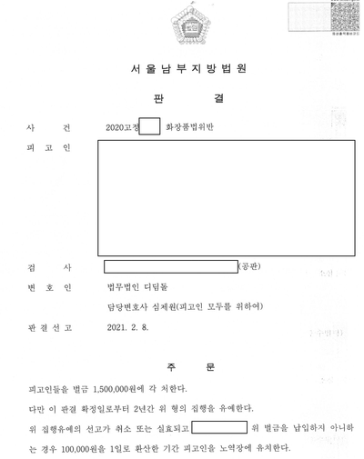

01사건 개요
보건소의 고발로 화장품을 만들어 파는 법인과 그 대표가 화장품법 위반(광고)으로 약식명령을 받자, 정식재판을 청구한 사건입니다. 광고 문구에 대한 실증 자료가 있었지만, 그 문구가 실증 범위 안에 있는지를 두고 다퉜습니다.
02쟁점
- 광고 문구가 실증 자료로 뒷받침되는 범위 안에 있는지
- 해당 광고 문구에 실증이 필요한지
03변호사가 한 일
- 정식재판을 청구해 고발인을 증인으로 신문했습니다.
- 식품의약품안전처에 사실조회를 신청해 광고가 허용되는 범위를 확인했습니다.
- 실증 자료를 근거로 광고가 소비자를 속이거나 잘못 알게 할 우려가 없다고 주장했습니다.
04결과
무죄는 인정되지 않았지만, 법원은 법인과 대표에게 각 벌금 150만 원을 선고하면서 2년간 그 집행을 유예했습니다. 검사와 피고인 모두 항소하지 않아 그대로 확정됐습니다.

이 사례는 원문을 요약해 정리한 것입니다. 사건 경과와 판결문 등 전체 내용은 로톡에 게시된 원문에서 볼 수 있습니다.
로톡에서 전문 보기 →05비슷한 상황이라면
화장품 광고 규정은 상당 부분이 시행규칙에 위임돼 있어 판단이 애매한 경우가 많습니다. 단속이나 고발을 당했다면 광고 문구와 실증 자료를 함께 정리해 두세요.
화장품법 위반으로 약식명령을 받았는데 다툴 수 있나요?
약식명령을 고지받은 날부터 7일 이내에 정식재판을 청구할 수 있습니다. 화장품 광고 위반으로 약식명령을 받은 법인과 대표가 정식재판에서 벌금형 집행유예를 받은 사례가 있습니다.
벌금형에도 집행유예가 있나요?
500만 원 이하의 벌금형을 선고할 때는 집행유예를 붙일 수 있습니다(형법 제62조). 화장품법 위반 사건에서 벌금 150만 원에 2년간 집행유예가 선고된 사례가 있습니다.
화장품 광고 문제로 광고업무정지처분을 받았습니다.
집행정지 신청과 취소소송으로 다툴 수 있습니다. 4개월 광고업무정지처분에 대해 집행정지 결정을 받고 취소 판결까지 받은 사례가 있습니다.
평일 09:00–18:00 변호사가 직접 전화를 받습니다.
재판으로 자리에 없는 경우 로톡으로 상담을 신청하시거나 이메일로 문의해 주세요.
의뢰인이 특정되지 않도록 사실관계를 일부 줄이거나 바꾸어 정리했습니다. 사건의 결과는 구체적인 사실관계와 증거에 따라 달라질 수 있으며, 같은 결과를 보장하지 않습니다.